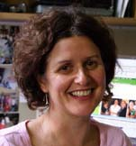
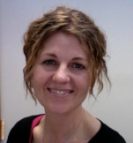
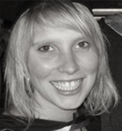
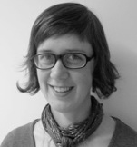

An historical study of curriculum, student counselling and citizenship, 1930s - 1970s
Educating the Australian Adolescent is an historical study of Australian secondary education in the middle decades of the twentieth century. The project is examining ideas and debates about how best to educate Australian secondary school students and the role of schooling in shaping social values and citizenship, in the past and in the present.
About the Project
This research takes a close look at curriculum programs and reforms and at the role and development of child and adolescent guidance in schools during three decades of educational upheaval – 1930s, 1950s, 1970s.
Across each of the three periods, Educating the Australian Adolescent will:
- Map key curriculum policy, scholarly and professional discussions about the purposes of secondary schooling, and critically analyze the philosophies and ideas that underlay the education of Australian adolescent;
- Examine changing conceptions of the ‘good student’, and the role of different curriculum areas in the shaping of rational, well-adjusted future citizens;
- Develop a history of child and adolescent psychological guidance and counselling services in schools, which will in turn, shed light on ideals of the adolescent and ‘good student’.
The research will provide historical perspectives on current concerns about school values and student wellbeing, enrich theories of citizenship and ethics, deepen understandings of transnational educational ideas and policy drivers, and contribute new knowledge about Australia's education history.
This research has been funded by the Australian Research Council, 2009-2011 (Discovery Project DP0987299) and has been approved by the Human Research Ethics Committee at the University of Melbourne
Methodology
- Archival research on documentary material Documentary sources include professional and scholarly reports, curriculum texts and proposals, administrative records, and the papers of key players and agencies.
- Oral history interviews These interviews will bring the perspectives of different educational actors — pupils; teachers; guidance, curriculum and policy personnel — in to our analysis of adolescence and schooling over three generations.
The project team
|
 |
Julie McLeodJulie McLeod is an Associate Professor in the Graduate School of Education at the University of Melbourne. ...read more
Before working in universities, Julie was an English language teacher in secondary schools, community houses and language centres. She conducts research on the history and sociology of education and has longstanding interests in education, equity and gender, the history of curriculum and school reform, and youth, identity and schooling. Julie has conducted many large research projects, including a report for the Commonwealth government on gender and educational performance and a longitudinal study of secondary school students from age 12 to 18. Her recent publications include: Making Modern Lives: Subjectivity, Schooling and Social Change
(with L. Yates, [State University of New York Press, 2006]); Learning from the Margins: Young Women, Social Exclusion and Education
(edited with A. Allard: RoutledgeFalmer 2007); T
roubling Gender in Education
(edited with J. Dillabough & M. Mills, RoutledgeFalmer); and
Researching Social Change: Qualitative Approaches
(with R. Thomson, Sage).
|
|
 |
Katie WrightKatie Wright is an Australian Research Council Postdoctoral Fellow in the Graduate School of Education at the University of Melbourne. ...read more Prior to taking up the Fellowship in 2009, she worked as a researcher in education, and taught in the sociology programs at La Trobe University and the University of Melbourne. In 2007, she completed doctoral studies at La Trobe and since that time has been further developing her interest in the sociology of education though work on projects in the Graduate School. Her major research area is the history and cultural influence of psychology, a subject she is currently exploring through an historical study of child and adolescent guidance and counselling in schools.
|
|
 |
Sari Braithwaite
Sari Braithwaite graduated from the Australian National University with Honours in History in 2007. Since then she has worked as a research assistant in various aspects of Australian history and society.
...read more
She has held contracts at the Australian National University, National Museum of Australia, Monash University and Sydney University. She also undertakes freelance research for film and television, and is interested in pursuing documentary film making. She is currently a casual research assistant on the 'Educating the Adolescent’ project, assisting with oral history recruitment, as well as locating archival information.
|
|
 |
Sophie RudolphSophie Rudolph is currently completing her Masters of Education through the Graduate School of Education, University of Melbourne and is working as research assistant with the ‘Educating the Adolescent’ project, assisting with summarising the oral history interviews. ...read more She is also an art teacher at Collingwood College and her teaching interests include the concept of ‘teacher as researcher’, critical pedagogy, listening, reflective and collaborative practice. Her research interests include critical race and whiteness studies, disruption of power and knowledge hierarchies and researching with children. She finds inspiration for her work and creative endeavours in her relationships with students, colleagues, friends, family and the natural environment.
|

|
Amy McKernanAmy McKernan is a research assistant on the 'Educating the Adolescent' project. She completed a Bachelor of Arts from the University of Melbourne in 2006, and a Master of Teaching (Secondary), in History and TESOL, at the University of Melbourne in 2011. A long interest in history has led her to undertake volunteer work at the Shrine of Remembrance, the Public Records Office of Victoria, and the United Kingdom National Inventory of War Memorials. She will commence a PhD in 2012 under the supervision of Julie McLeod and John Whitehouse. |
Oral Histories
Since 2009 we have been conducting oral histories with people who were students (from the 1930s to the 1970s), teachers, curriculum and policy personnel, guidance officers and school counsellors (from the 1950s to 1970s). Many people have stories that overlap, for example, their experiences as a student informing their decisions to become teachers, and many people's careers span several decades. In organising the oral history interviews, we have focused more closely on one aspect of each person’s story and grouped the histories into both theme and time categories.
Some brief biographical snapshots of some of the people we have interviewed so far have been gathered under the headings below. Full transcripts of these interviews will be archived at the completion of this project and subject to the necessary permissions, many will be available to other researchers upon request. If you would like further information about accessing oral history transcripts, please contact us. We will be progressively adding to this page so check back soon for updates.
You can view oral history interviews by decade or by theme below.
Oral Histories by Decade
The 1930s
It should be possible for all members of a democracy to meet on a common platform, but we still have far to go before we can attain this ideal. Every step towards the provision of wider educational facilities leads towards the daylight and out of the cloudy regions where so many people still reside. Teachers’ Journal, 20th May 1939
MavisMavis was born in 1921 on Cabbage Tree Island, near Ballina in northern NSW. She was one of ten children and attended the primary school on the Island, remembering that they were ‘very, very happy days of my life, wonderful days’. The school was a one-teacher school for Aboriginal children and the reserve manager’s wife, Mrs Daley, taught the children a general range of subjects. Mavis also received a wide education from various family members that encompassed fishing, music, sewing, cooking, housework, gardening and swimming. She was a zealous student, a value perhaps instilled in her by her parents, her father being ‘a keen newsreader’ and therefore well informed of world matters. Mavis displayed a natural aptitude for writing and was encouraged to compose an essay on the Sydney Harbour Bridge as part of a nation wide essay competition held as part of the Harbour Bridge celebrations in 1932. She subsequently won first prize, resulting in 11-year-old Mavis being photographed for the Sydney Morning Herald. Despite Mavis’ keen academic propensities she was unable to attend Ballina High School due to discrimination from within the Ballina community and transport challenges. When further education became available to her when she was in her 80s, however, she enrolled in a TAFE course and won a number of prizes for her academic achievements across a range of subject areas. She also pursued a number of creative avenues, including sewing, painting and ceramics. She often wonders what else she might have done with her life if she had been able to pursue further education at a younger age.
AliceAlice grew up in the small Victorian country town of Wynam East. She attended the local primary school until grade eight and then completed two years of correspondence schooling, in which she studied a range of subjects, including shorthand and bookkeeping. She remembers there were a few options for students once they finished primary school, some going to Nhill High School and boarding, others attending schools, and boarding in Adelaide. She was the only student in her area, however, who chose to do correspondence to complete her secondary schooling. She notes that few young people from her community went on to tertiary study as most returned to farms to work with their families. Alice remembers the strong influence of the Depression on the families in her region with many struggling greatly. She recounts how her mother would bake and deliver food to the neighbours, creating a strong ethic of care within her family, ‘I think it made you very considerate of people that were poor, you know, helpful and considerate. Dad and mum were wonderful citizens like that. And I think it rubs off on the kids.’
SteveSteve was born in Richmond in 1924 and spent a little time in his early childhood in Gippsland, where his father was a teacher, before he moved back to Richmond to live with his grandmother when he started school. He began his primary education at Yarra Park School and then attended West Preston State School. A strong memory of his primary school experience is the large class sizes, up to 70 children in a class, and the authority of the teachers, ‘you never queried what your teacher said, there was no challenging’. Steve recalls how young students at this time were quite independent, going across the road for lunch and riding bicycles long distances to school. He attended two high schools, the first Coburg High, in which he remembers his Latin teacher inspiring a long-lasting love of the language. The second high school he attended was Melbourne High, which he remembers fondly, noting Geology excursions, the library and academic rigor as important aspects of that experience. He left Melbourne High at the age of 15 and started work in the State Bank, studying Commerce at university alongside his work. Part way through his degree he left for the War and then continued his work and study when he returned. He worked for the Bank for 49 years. Steve is proud of the family tradition of attendance at Melbourne High School and the value of academic study, instilled in him by both his family and his teachers.
JoanJoan was born in 1915. She spent the first two years of her life on a farm in western Victoria before her family moved to a seaside town near Geelong. Joan went attended a small primary school and remembers the one room school having a ‘fire place with a fire burning brightly’. The Headmaster and one other teacher taught eight classes in the one room and at the end of grade six Joan won a scholarship to attend a large High School. Joan has very fond memories of her high school days, enjoying her classes and all the extra-curricula opportunities, remembering that ‘life was very full, there was no standing around, your days were absolutely filled with something to do and there was something for everyone too’. Joan remembers her geology excursions as a highlight of her high schooling, ‘we used to go for excursions, climbed the You Yangs, had little hammers and things’. She attributes her love of learning and high standard of education to ‘the ability and quality of the teachers’. After completing school, Joan went on to study nursing. She decided she wanted to be a nurse when she was walking home past the hospital one day and so went to ask the matron if she could organise it for her. Little did she know that it was her father who would take more convincing as he was uncomfortable with women nursing men, however, her aunt assisted in convincing him.
1950s
is likely to be claimed in some quarters that Australia, with her wide-open spaces, her climate, her high standard of living, her racial homogeneity, her mobility of population, her facilities for, and interest in, sport and outdoor life, has no youth problem in comparison with the more populous countries studied. It may well be true that such factors help to make the Australian problem less acute than it would otherwise be, but the view indicated above can lead to dangerous complacency. We have no hesitation in affirming that Australia cannot afford to neglect the problem of youth, that indeed her future well-being depends to a considerable extent upon its being tackled more seriously and more comprehensively than at present. The Adjustment of Youth, 1951, p 237
RonRon was born in Donald and attended Donald Higher Elementary School until Form 4, recalling that it was common for country schools to have a combined primary and lower secondary school. The large class sizes and composite arrangements are memories that stand out for Ron, the limited resources meaning, ‘the smaller ones sat three to a desk’. He remembers his Grade 5 and 6 teacher, the first male teacher he’d had, being ‘a good teacher, you enjoyed learning’. He also recalls the impact of his science teacher on his love of science, recounting the extra efforts this teacher went to to engage and inspire his students, ‘he had a telescope and he took the class out one night to watch’. After Form 4 Ron caught the bus to St Arnaud for Form 5, and then boardered with a local family from Monday to Friday in Warracknabeal for Form 6. He remembers that his family were very supportive of him gaining a good education and it was never questioned that he would go on to tertiary studies. At the age of 17 he moved to Melbourne and boarded with a family while he studied Chemical Engineering at RMIT, which was then the only tertiary institution to offer a course in this field. He then worked as a chemical engineer in Melbourne before retiring to country Victoria.
JanJan was the youngest of five children. She was born in 1940 in Seymour, Victoria and attended Seymour Primary School and Seymour High School. Her father worked on the railways as a guard and her mother was a milliner and a tailoress, before becoming a housewife with the arrival of her children. Jan remembers her primary school teachers being very good and quite revered in the town and a strong memory of her time at school, just after the War is the provision of hot cocoa: ‘It was a thing I think in all schools at morning tea time break you went over to the shelter sheds and there was hot cocoa. All the kids, you took your pannikin or whatever and you got a cup of hot cocoa which was very nice in the winter’. At high school Jan remembers studying a range of subjects but being particularly focused on sport, something she enjoyed greatly. After Matriculation Jan studied to be a nurse and worked at the Box Hill Hospital before going overseas to study midwifery in Scotland and work in the UK. She travelled through Europe and when back in Australia she joined the Army and became an Army nurse, working in a field hospital in Vietnam in 1968-9. On her return to Australia, Jan worked in many different cities and towns as an Army Nurse and finally became Director of Nursing, retiring in 1992. In her retirement Jan looks after war widows, is on the Committee of Lighthorse Park, is the President of the Returned Nurses and plays bowls.
DorothyDorothy was born in 1916 in the Melbourne suburb of Coburg. Shortly after her birth the family moved to Broken Hill where her father had work until the war ended. They then moved to Gippsland where her parents started a farm. Dorothy completed her primary education at a two-teacher school in Woodside and at the end of year eight she went to Melbourne to board with an aunt to finish her schooling. First she attended Preston Girls’ School and then she went to Melbourne Girls’ High School. She remembers that ‘not many schools went up to Year 12, it was called Leaving Honours, but my father believed girls should be educated and should go too’. This enabled Dorothy to then continue into tertiary education, gaining a teaching qualification. She remembers that she ‘always wanted to be a teacher’ and worked first in the primary area and then moved to secondary teaching. She notes how ‘everyone had to start as a primary teacher’ and describes her first teaching position at a one-teacher school in St Leonards: ‘There were twenty-eight [students] which was the biggest one you could have in a one teacher school without a sewing teacher…you’d have to have everything up on the board when they came in’. Dorothy went on to teach in a range of schools during the 1950s - Lloyd Street Central, Ballarat Girls, Hampton High and McKinnon High. She then moved to Camberwell High and was made a senior mistress, which involved a significant discipline role, her responsibilities being with the girls. Dorothy was involved in developing a course at Camberwell High called ‘Human Relationships’ which involved sex education and other aspects of human behaviour. She was also given freedom to adapt the history curriculum so that there were no longer stand alone American and British History subjects, there being a focus on world history instead. Dorothy remembers she was able to do many things that were unconventional during her teaching because of the way she understood and interacted with the students: ‘so we were able to do those things – it’s not just the case of the kids, it’s your relationship with them’.
AnnAnn attended Yallourn primary and secondary schools and completed her secondary schooling at Firbank Grammar School in Melbourne. She matriculated in 1953 and went on to study Science at the University of Melbourne. Part way through her Science degree she decided to apply for a Commonwealth Scholarship to study teaching and then a studentship with the Education Department to do the Trade Secondary Teacher’s Certificate. She became a Science and Maths teacher, her first teaching position being at Nathalia Higher Elementary School in northern Victoria. After completing her three year bond as part of the studentship Ann resigned and moved to England to teach, which she suggests ‘a lot of people’ did ‘in the 50s’. She stayed in England for two and a half years and being a science teacher she was in high demand, finding work easily. When she returned to Australia in the 1960s Ann taught in a number of schools across Melbourne, including Essendon High, Kew High and Camberwell High. While at Camberwell High Ann joined the USEB Physics committee and was one of two women representatives. She then became deputy principal at Northcote High in the 1980s, which she remembers met the ‘horror of quite a number of people out there’ as ‘they’d never had a woman in the principal class at Northcote Boys’. After serving as deputy principal at Northcote High, she returned to Camberwell High as principal at the end of her career. While Ann was at Camberwell High there was significant change in the Physics and Maths curriculum and pedagogy and she notes that some of the major changes over her teaching career were to do with curriculum and technology: ‘there were no calculators let alone computers’.
ValVal grew up in Ballarat and started school in the early 1940s, during World War II. Her mother was a teacher and her father was working in Melbourne on War related business. She attended kindergarten, which she recalls was unusual for the time, before starting primary school at State School No 27 in Humffray Street, Ballarat. One of her strongest memories of primary school is the care and commitment of her teachers. She recalls Miss Baxter, who helped her through her struggles with maths and sold silk worms to the children, encouraging them to be scientifically curious and Mr Sinclair, who brought gladioli into the classroom and ran a Friday afternoon quiz, which was very popular. She completed her secondary school education at Ballarat Girls’ School and at 15 years of age went on to tertiary studies at The School of Mines, where she trained in Art and Dressmaking. After completing her education she worked as draughtswoman before training as a teacher. The remainder of her career was spent teaching art and textiles at both secondary and tertiary levels. She taught at the secondary school she attended and notes the many changes that occurred there between her time as a student and a teacher, such as new buildings, the introduction of male teachers and changes in student attitude and discipline. In reflecting on her school experiences, Val said that the most important thing about her schooling was that ‘it broadened my mind and it prepared me for working’. Val’s experiences as a teacher allowed her to reflect on her own teachers and she ‘realised just what a wonderful set of people those teachers were’ and one of the strong memories of her teaching time was her Principal’s commitment to outdoor education through the purchase of some land for ‘a permanent school camp’. She recalls her experiences as a Girl Guide as valuable in enabling her to support the camping program at the school. In reflecting on the changes in education over her lifetime she notes the better conditions in which students now learn and the range of subjects now offered to young people.
Oral histories by theme
Students
‘Do pupils develop into good citizens? Only time will tell. But they are on the right road if they leave school with a good general knowledge of our political institutions, an easily roused interest in public affairs, a ready recognition of the fact that since there are two sides to every question it is folly to champion one side without trying to get to the point of view and arguments of the other side; if they are becoming accustomed to listening patiently to views they may not agree with, since each side has an equal right to be heard.’ Alice Hoy, (1934), Report on the teaching of history and civics in Victorian secondary schools, p.49
SteveSteve was born in Richmond in 1924 and spent a little time in his early childhood in Gippsland, where his father was a teacher, before he moved back to Richmond to live with his grandmother when he started school. He began his primary education at Yarra Park School and then attended West Preston State School. A strong memory of his primary school experience is the large class sizes, up to 70 children in a class, and the authority of the teachers, ‘you never queried what your teacher said, there was no challenging’. Steve recalls how young students at this time were quite independent, going across the road for lunch and riding bicycles long distances to school. He attended two high schools, the first Coburg High, in which he remembers his Latin teacher inspiring a long-lasting love of the language. The second high school he attended was Melbourne High, which he remembers fondly, noting Geology excursions, the library and academic rigor as important aspects of that experience. He left Melbourne High at the age of 15 and started work in the State Bank, studying Commerce at university alongside his work. Part way through his degree he left for the War and then continued his work and study when he returned. He worked for the Bank for 49 years. Steve is proud of the family tradition of attendance at Melbourne High School and the value of academic study, instilled in him by both his family and his teachers.
JoanJoan was born in 1915. She spent the first two years of her life on a farm in western Victoria before her family moved to a seaside town near Geelong. Joan went attended a small primary school and remembers the one room school having a ‘fire place with a fire burning brightly’. The Headmaster and one other teacher taught eight classes in the one room and at the end of grade six Joan won a scholarship to attend a large High School. Joan has very fond memories of her high school days, enjoying her classes and all the extra-curricula opportunities, remembering that ‘life was very full, there was no standing around, your days were absolutely filled with something to do and there was something for everyone too’. Joan remembers her geology excursions as a highlight of her high schooling, ‘we used to go for excursions, climbed the You Yangs, had little hammers and things’. She attributes her love of learning and high standard of education to ‘the ability and quality of the teachers’. After completing school, Joan went on to study nursing. She decided she wanted to be a nurse when she was walking home past the hospital one day and so went to ask the matron if she could organise it for her. Little did she know that it was her father who would take more convincing as he was uncomfortable with women nursing men, however, her aunt assisted in convincing him.
ValVal grew up in Ballarat and started school in the early 1940s. Her mother was a teacher and her father was working in Melbourne on war related business. She attended kindergarten, which she recalls was unusual for the time, before starting primary school at State School No 27 in Humffray Street, Ballarat. One of Val's strongest memories of primary school is the care and commitment of her teachers. She recalls Miss Baxter, who helped her through her struggles with maths and sold silk worms to the children, encouraging them to be scientifically curious and Mr Sinclair, who brought gladioli into the classroom and ran a Friday afternoon quiz, which was very popular. She completed her secondary school education at Ballarat Girls’ School and at 15 years of age went on to tertiary studies at the School of Mines, where she trained in Art and Dressmaking. After completing her education she worked as draughtswoman before training as a teacher. The remainder of her career was spent teaching art and textiles at both secondary and tertiary levels. She taught at the secondary school she attended and notes the many changes that occurred there between her time as a student and a teacher, such as new buildings, the introduction of male teachers and changes in student attitude and discipline. In reflecting on her school experiences, Val said that the most important thing about her schooling was that ‘it broadened my mind and it prepared me for working’. Her experiences as a teacher allowed her to reflect on her own teachers and she ‘realised just what a wonderful set of people those teachers were’ and one of the strong memories of her teaching time was her Principal’s commitment to outdoor education through the purchase of some land for ‘a permanent school camp’. She recalls her experiences as a Girl Guide as valuable in enabling her to support the camping program at the school. In reflecting on the changes in education over her lifetime she notes the better conditions in which students now learn and the range of subjects now offered to young people.
Teachers
‘In practice he needs a wide if not a deep fund of knowledge, infinite practice and great organising power. How is the State to find such men and women? Few of the critics who out of their abundant ignorance refer to the short hours, good pay and excess holidays enjoyed by the teacher, show any desire to relieve him of his work. The truth is that the training required for the profession of teaching is strenuous and unceasing, and that failure exposes him to the deepest humiliation. An artisan or a business man receives sympathy for an honest failure, but children are merciless to the teacher who cannot rise to the heights they demand. The selection and training of the teacher is therefore a matter of national concern, and one would expert those who are responsible to the people for the education of their children to have something attractive to offer to suitable candidates. The Teachers’ Journal, 21st August, 1939
DorothyDorothy was born in 1916 in the Melbourne suburb of Coburg. Shortly after her birth the family moved to Broken Hill where her father had work until the war ended. They then moved to Gippsland where her parents started a farm. Dorothy completed her primary education at a two-teacher school in Woodside and at the end of year eight she went to Melbourne to board with an aunt to finish her schooling. First she attended Preston Girls’ School and then she went to Melbourne Girls’ High School. She remembers that ‘not many schools went up to Year 12, it was called Leaving Honours, but my father believed girls should be educated and should go too’. This enabled Dorothy to then continue into tertiary education, gaining a teaching qualification. She remembers that she ‘always wanted to be a teacher’ and worked first in the primary area and then moved to secondary teaching. She notes how ‘everyone had to start as a primary teacher’ and describes her first teaching position at a one-teacher school in St Leonards: ‘There were twenty-eight [students] which was the biggest one you could have in a one teacher school without a sewing teacher…you’d have to have everything up on the board when they came in’. Dorothy went on to teach in a range of schools during the 1950s - Lloyd Street Central, Ballarat Girls, Hampton High and McKinnon High. She then moved to Camberwell High and was made a senior mistress, which involved a significant discipline role, her responsibilities being with the girls. Dorothy was involved in developing a course at Camberwell High called ‘Human Relationships’ which involved sex education and other aspects of human behaviour. She was also given freedom to adapt the history curriculum so that there were no longer stand alone American and British History subjects, there being a focus on world history instead. Dorothy remembers she was able to do many things that were unconventional during her teaching because of the way she understood and interacted with the students: ‘so we were able to do those things – it’s not just the case of the kids, it’s your relationship with them’.
RobertRobert was born in 1940 and grew up just outside Ballarat on a farm that had been in the family for a number of generations. He attended a one-teacher primary school and remembers the teacher fondly, a man ‘to whom I am really indebted in many, many respects…he inculcated in us humane values’. He then attended Ballarat High School, boarding with his mother’s Aunts initially and then returning to the family farm after his father’s death in 1955 and cycling eight miles each day to school after helping milk the cows. He enjoyed his time at Ballarat High being placed in the ‘professional stream’ and studying History, English, Literature and Latin in his Matriculation. He has strong memories of his Latin teacher sharing aspects of his work with refugees and migrants and suggests his students ‘were sort of imbued with a very early notion of multiculturalism’ through this work. Robert went on to attend the University of Melbourne, studying Arts Honours in English and History and being supported on a secondary studentship before completing his tertiary studies with a Diploma of Education. His first teaching assignment was Geelong High School where he taught for three years before spending the next three years in Europe doing an assortment of work, including teaching in London. When he returned to Australia he taught at Reservoir High School and then became Head of English at Northcote High in 1973. He taught at Northcote High for fifteen years, then moved to St. John’s Greek Orthodox College in Preston for six years before returning to Northcote High in 1997. He retired in 2004.
ElaineElaine was born in Dookie, Victoria and spent time at primary school in Clifton Hill and Koroit as her father was a Presbyterian Minister and the family moved periodically for his work. She also attended two secondary schools, Warrnambool High and Coburg High. She remembers many aspects of her schooling experiences being significant, such as the multi-age classes and long classrooms at Gold Street Primary and at Koroit Primary the ‘chooks and all sorts of things that we looked after’. She also remembers some of the tensions of being the child of a Protestant minister in a largely Catholic town, but the great respect that both her father and mother received. At Coburg High she enjoyed the geography excursions and believes it was the teachers there that inspired her to become a teacher herself, ‘the Art teacher was just fabulous and he was a bit more liberal I suppose in his thinking than the other teachers at Coburg High’ and ‘the Literature teacher…that’s where I got a love of Chaucer, he’d read Chaucer…and he would read it just so that you were there, it was fascinating.’ Elaine went on to study a Fine Arts degree and completed her teaching qualifications at Teachers College on a studentship. Her first teaching post was in the small Victorian town of Donald and she remembers the strong interaction the teachers had with the tight-knit local community. She went on to teach at Yea High School and Ballarat and Clarendon College, believing strongly in the value of art to contribute to a holistic education. She speaks of her love and respect for the students she worked with and the challenges and insights they brought to her classes. She also notes the difficulties of having art recognised as a valuable subject in schools and the increasing pressures on teachers to report, monitor and moderate every detail of their work, which she believes takes away from the teaching time and attention given to students.
Guidance officers and school counsellors
Pam grew up in Adelaide and attended Gillalot Gardens Primary School and Unley High School, before taking up studies to become a primary school teacher. She remembers she had been ‘wanting to be a teacher for a long time’ and that she had a particular interest in special education. She won a scholarship for her teacher training and was bonded to the South Australian country town of Pt Pirie. Although primary trained, Pam taught in the high school as there were teacher shortages. During her teaching there, she was identified as having completed the ‘course for difficult and backward children’ and invited to teach in the town of Berri in a Special Education role. Here she won a scholarship to become a teacher/psychologist, completing her degree with a psychology major followed by two years of on the job training. Pam gives a spirited account of the training she received as an apprentice, remembering that it was a ‘very lively, exciting place’ with ‘a lot of discussion’. Pam’s career in Special Education spanned four decades and involved a range of roles. These included as a remedial reading teacher in the 1960s, a teacher/psychologist and regional officer, involving travelling to outlying towns in the 1970s and then as a training supervisor for Special Education officers in the 1970s, 80s and 90s. In the 1970s she suggests, ‘South Australia did lead Australia at that stage in offering education to students – in most other states they were excluded from school’, highlighting the leading role SA played in Special Education. Pam notes the many changes that have occurred in the delivery of Special Education over the time she has worked in the field, observing shifts in values that guide the work of Special Education and social and contextual shifts that have impacted this area. She laments the most recent narrowing of the role of Special Education workers, remembering that, ‘it was a joy of a job and I think you miss that if you’re just a psychologist wandering around looking for a few problems’.
Curriculum and policy personal
Lawrie was born in 1921 and began his schooling at Windsor Primary School on his sixth birthday. He relished the opportunities school afforded and went on to study at Elsternwick Primary, Elwood Central School and University High School. This was quite a feat as his father didn’t know that high schools existed and no one in his family had pursued an academic path. Although Lawrie initially wanted to be a lawyer, he ‘showed some signs of being able to be a good teacher’ and on finishing his Leaving Certificate he was offered a Junior Teacher role at Miller Street in North Fitzroy. His experiences with his senior teacher, Pauline Knight, at Miller Street, convinced him that he ‘wanted to be a teacher’. He therefore went on to study at Teachers College and took up his first teaching position at Korong Vale in 1943 where he ‘stayed in the local pub, played tennis and did all those things’. He moved on to Bairnsdale High School soon after and established a social sciences classroom, displaying a tendency towards innovation and leadership that would characterise the rest of his career. His next teaching position was at Dookie Agricultural School where he revolutionised the timetable and syllabus, before heading to London on a John and Eric Smyth Travelling Scholarship to complete a PhD in the dynamics of leadership in adolescent school groups. When Lawrie returned to Australia he took on a number of roles in which he instituted significant change in education. The first was as a Planning and Survey Officer, which involved establishing a large number of Teachers’ Colleges across Victoria and ensuring students from country areas were able to access training opportunities by providing hostel accommodation. His next move was to principal of Burwood Teachers’ College in 1961 and he recalls this was labelled the ‘golden age of teacher education’. His influences in this realm included instigating better connections between practising principals and teacher education institutions, and sending students on trips across Australia to learn about the country they would be teaching in. The next stage in Lawrie’s career was as Director of Education in Victoria. In this role he wrote a series of influential papers regarding various elements of the education system and had responsibility for ‘education from babies to adults’. At this time he also became the president of the Victorian Institute of Educational Research, which would foreshadow the Australian Council for Educational Research (ACER) and he recalls was ‘the premier institute in Australia’ at the time.
Hec GallagherHec was born in 1925 in Collingwood and then the family lived in Hawthorn until he was about one and half and his father got a job with the railways, moving them to Dimboola. Hec has very fond memories of his first years of schooling at Dimboola Primary School, remembering that ‘it wasn’t like going to school in terms of being a chore, it was just fun all the time’. When Hec was in grade four the family moved back to Melbourne and he attended Alfred Crescent Primary School in North Fitzroy. This he describes as a ‘dour horrid place’, contrasting greatly with his early school experiences. Hec then went to North Fitzroy Central School and remembers that the students were streamed and suggests that many of the students were ‘kids who were just waiting ‘till they were fourteen and they would leave’. Hec, however, went on to attend Northcote High School and then due to the Depression and the War, postponed his further study and took up a job as a junior clerk in the Victorian Railways. When he was eighteen, Hec joined the Air Force and served in the War, before returning to Australia and taking up a place in a post-War training scheme, recalling that, ‘hundreds of teachers became trained under this scheme’. He discovered that teaching ‘was just made for me, I was as happy as can be’ and he went on to teach geography and accounting at various schools across Victoria. In 1961 Hec received a travelling scholarship from the Education Department and did an Associateship at the Institute of Education in London for a year. Hec studied the ‘teaching of geography at the 6th form level’ and looked at how geography was being taught in schools in the UK. Hec continued to engage in education when he returned to Australia, taking on a variety of roles, including, teacher at Rusden Teachers College, Assistant Director of Secondary Education and Special Assistant to the Director General. Part of the Assistant Director role involved inspecting schools and observing teachers and their teaching. Hec describes the ways in which inspectors tried to support schools and his own work in developing ‘in-service camps’ and in particular his desire to develop ‘field study for geography’. In all his experience of education, Hec observed that, ‘If you tell a person he’s stupid or she’s stupid they’ll oblige you, and if you tell groups of kids look you’re hopeless, they’ll be no hopers’. He therefore advocated education that was connected to real events and experiences and not just the ‘test for the sake of a test’.
Resources
Please contact us to obtain a copy of any paper outlined below.
Project publications and presentations
Katie Wright & Julie McLeod (2012)‘Public Memories and Private Meanings: Representing the “happy childhood” narrative in oral histories of adolescence and schooling in Australia, 1930s-1950s’. Oral History Forum d’histoire orale, www.oralhistoryforum.ca/index.php/ohf/article/view/424
Katie Wright (2012, in press) ‘“Help for Wayward Children’: Child Guidance in 1930s Australia’, 41(1) History of Education Review.
Katie Wright (2011) 'The Therapeutic School: Historicizing Debate about Educational Policy and Practice', Refereed Proceedings of the Annual Conference of The Australian Sociological Association, Newcastle.
Julie McLeod (2011) 'Genealogies of Adolescence: Gender, Race and the Cosmopolitan Citizen', International Gender and Education Conference, University of Exeter, UK, 27-29 April.
...read moreKatie Wright (2011) '"Treating Delinquency at the Source": International Infuences on the Establishment of Child Guidance Clinics in Interwar Australia', Juvenile Delinquency in the 19th and 20th Centuries: East-West Comparisons', Centre for British Studies, Humbolt University Berlin, 12-13 March.
Julie McLeod (2010) 'Educating for "World-mindedness": Civics and the Cosmopolitan Adolescent'. Paper presented in symposium convened by Julie McLeod: 'The Promise of the New: History, Youth, Citizen', at the Australian Association for Research in Education (AARE) Annual Conference, Melbourne, 28 November - 2 December.
Katie Wright (2010) '"To See Through Johnny and to See Johnny Through": The Guidance Movement in Interwar Australia'. Paper presented in symposium convened by Julie McLeod: 'The Promise of the New: History, Youth, Citizen', at the Australian Association for Research in Education (AARE) Annual Conference, Melbourne, 28 November - 2 December.
Julie McLeod (2010) 'The Good Student: A Genealogy of Adolescence and Schooling for Citizenship', Paper presented at the Meeting of the American Educational Research Association, Denver, 30 April - 4 May.
Katie Wright (2010) 'Therapeutic Education: An Historical Perspective', Paper presented at the Annual Conference of the British Sociological Association, Glasgow Caledonian University, 7-9 April.
Julie McLeod (2010) 'Progressive Expertise Transported: Carnegie and Australian Education', Paper presented at the Australian Social Sciences Academy Workshop: Philanthropy and Public Culture: The Influence and Legacies of the Carnegie Corporation of New York in Australia, University of Melbourne, 24-25 February.
Katie Wright (2010) 'American Philanthropy and the Child Guidance Movement in Australia', Paper presented at the Australian Social Sciences Academy Workshop: Philanthropy and Public Culture: The Influence and Legacies of the Carnegie Corporation of New York in Australia, University of Melbourne, 24-25 February.
Katie Wright (2009) 'Misfits and the Maladjusted: Places and Spaces of Educational, Vocational and Child Guidance in Australia, 1920s-1940s', Paper presented at the History of Education Society, UK, Annual Conference, University of Sheffield, 4-6 December.
Julie McLeod and Katie Wright (2009) ‘Educating the Adolescent, 1930s-1970s: Curriculum, Counselling, Social Values and Citizenship’, Paper presented at the British Educational Research Association (BERA) Annual Conference, Manchester, UK, 2-5 September.
Julie McLeod and Katie Wright (2008) ‘Social Values and Schooling: Curriculum, Counselling and the Education of the Adolescent, 1930-1970s', Paper presented at the Australian Association for Research in Education (AARE) Annual Conference, Brisbane, 30 November - 4 December. A copy of the paper is available to download.
Related publications
Katie Wright (2011) The Rise of the Therapeutic Society: Psychological Knowledge & the Contradictions of Cultural Change. New Academia, Washington, DC.
Julie McLeod (2011) ‘Middle School’, in N. Lesko and S. Talburt (eds) Key Words in Youth Studies, Routledge, New York.
Julie McLeod (2011) ‘Temporality and Identity in Youth Research’, in A. Reid, P. Hart. M. Peters and C. Russell, Companion to Research in Education, Springer.
Julie McLeod (2010) ‘Canonical Moments and Disruptive Moves in Youth Studies Research’, British Journal of Sociology of Education, Vol. 31, no, 2, March, pp.249-257. A copy of this paper is available to download.
Julie McLeod (2009) ‘Youth Studies, Comparative Inquiry and the Local/Global Problematic’, Review of Education, Pedagogy and Cultural Studies, Vol 31, no.4, pp. 1-23. A copy of this paper is available to download.
Katie Wright (2008) ‘Theorizing Therapeutic Culture: Past Influences, Future Directions’, Journal of Sociology, Vol 44, no.4, pp. 321-336. A copy of this paper is available to download.